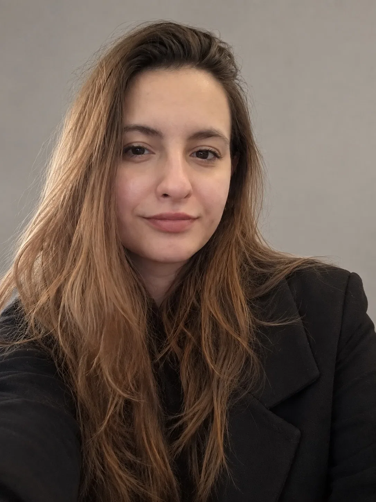
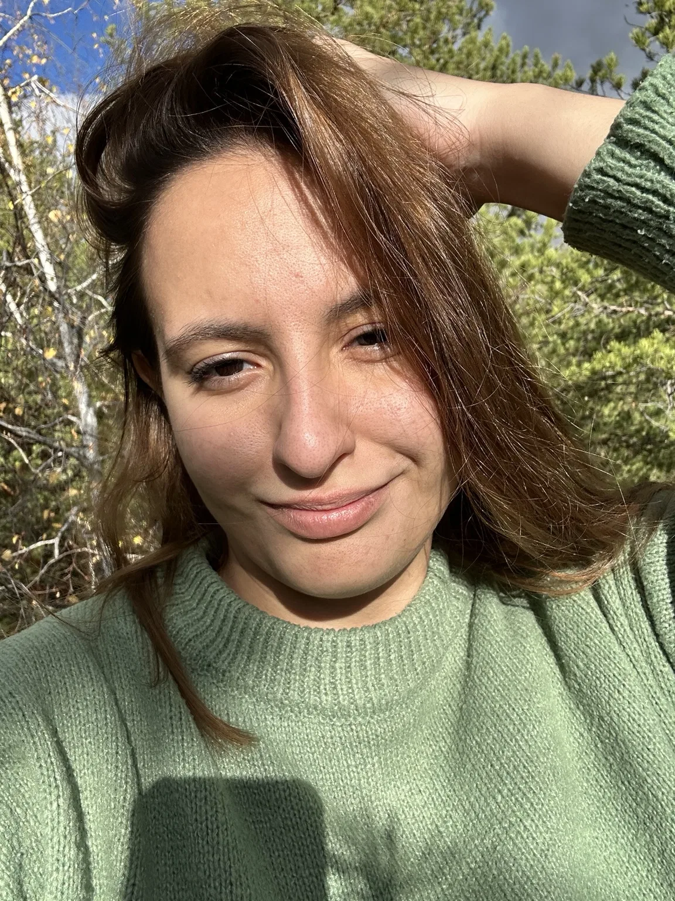

01 / COMMUNITY
Nova Generation
Собственная инициатива: идея, концепция, развитие сообщества и работа с участниками.
Основатель / идейный лидерРаботаю на стыке креатива и управления. От первого наброска — до проекта, у которого есть характер и результат.

PORTRAIT / 001Свои инициативы, визуальные эксперименты, работа с людьми и событиями. Разные форматы — один подход: делать осмысленно.
Собственная инициатива: идея, концепция, развитие сообщества и работа с участниками.
Основатель / идейный лидерОрганизационная работа и координация участников в международной хакатон-экосистеме.
Local Lead / координацияФорматы встреч, мероприятия и среда, в которой люди развивают навыки публичных выступлений.
Развитие клуба / мероприятияОбучение цифровым инструментам и ИИ, практические материалы и образовательные инициативы.
Обучение / разработка материалов23 визуальные работы: реклама, авторские обложки, афиши и визуальные кампании. Каждая работа — отдельная идея и собственный характер.
Рекламные концепты, музыкальные обложки, афиши и авторские визуальные эксперименты. Меняю графический язык под задачу, а не подгоняю всё под один шаблон.
Все концепты с логотипами сторонних брендов — неофициальные портфолио-работы. Авторские события, обложки и афиши показаны как творческие проекты, не подтверждение коммерческого заказа или проведения мероприятия.
13 BRAND CONCEPTS / 4 EVENT POSTERS / 3 CAMPAIGN PIECES / 3 CREATIVE STUDIES · 23 VISUAL WORKS
Девять обработанных портретов, три истории. От тонкой работы со светом и эмоциями до смелого контраста красного и зелёного. Все кадры сняты мной.
* ДЕМОНСТРАЦИОННЫЕ ФОТО И ПУСТЫЕ СЛОТЫ. ЗАМЕНИ НА СВОИ КАДРЫ В js/content.js.
Восемь вертикальных видео. Нажми на карточку, чтобы посмотреть ролик здесь, или открой оригинал на YouTube. Плеер загружается только по нажатию.

Привет, я Алина. Мне интересно и придумывать проекты, и самостоятельно делать визуал, и собирать людей, чтобы идеи превращались в реальные события.
Мой опыт объединяет управление, организацию мероприятий, работу с сообществами, фотографию, видео и цифровые инструменты. Люблю выразительную типографику, живые кадры и решения, которые не выглядят как очередной шаблон.
ЕСТЬ ИДЕЯ?
Интересны новые проекты в дизайне, фотографии, видео, мероприятиях и развитии сообществ.